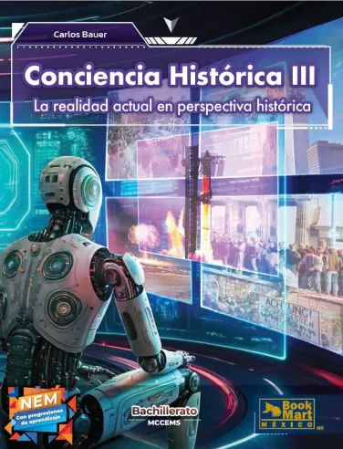

Conciencia Histórica III
Explorando las huellas del pasado
🎯 Nuestra Meta
Analizaremos los procesos históricos que marcaron los siglos XX y XXI. El objetivo no es solo memorizar fechas, sino entender cómo estos eventos construyeron la sociedad en la que vivimos hoy, desarrollando un pensamiento crítico para ser ciudadanos conscientes.📈 Ruta de Progresiones
01
Crisis y Guerras Mundiales: Analizamos la Gran Depresión de 1929, el ascenso de los sistemas totalitarios y el impacto de la Segunda Guerra Mundial.
02
Guerra Fría y Bienestar: Estudiamos la lucha entre socialismo y capitalismo, y cómo se formaron los estados de bienestar modernos.
03
México Contemporáneo: Entendemos el presidencialismo mexicano, el sistema de partido único y nuestro camino hacia la democracia.
Sergio Jovanni
Guía en el tiempo
"El pasado es el espejo del futuro."Crisis de 1929
Guerra Fría
Totalitarismos
Socialismo
Democracia
Presidencialismo
Cultura de Paz